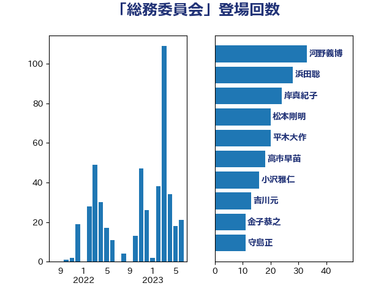

単語「総務委員会」

| 河野義博 | 公明党 | 33 回 |
| 浜田聡 | NHK党 | 28 回 |
| 岸真紀子 | 立憲民主党 | 24 回 |
| 松本剛明 | 自由民主党 | 20 回 |
| 平木大作 | 公明党 | 20 回 |
| 高市早苗 | 自由民主党 | 18 回 |
| 小沢雅仁 | 立憲民主党 | 16 回 |
| 吉川元 | 立憲民主党 | 13 回 |
| 金子恭之 | 自由民主党 | 11 回 |
| 守島正 | 日本維新の会 | 11 回 |
| 岡本あき子 | 立憲民主党 | 10 回 |
| 柳ヶ瀬裕文 | 日本維新の会 | 9 回 |
| 山口俊一 | 自由民主党 | 9 回 |
| 宮本岳志 | 日本共産党 | 9 回 |
| 道下大樹 | 立憲民主党 | 8 回 |
| 芳賀道也 | 国民民主党 | 8 回 |
| 湯原俊二 | 立憲民主党 | 8 回 |
| 沢田良 | 日本維新の会 | 8 回 |
| 奥野総一郎 | 立憲民主党 | 8 回 |
| 吉川沙織 | 立憲民主党 | 8 回 |
| 寺田稔 | 自由民主党 | 7 回 |
| 伊東信久 | 日本維新の会 | 7 回 |
| 赤羽一嘉 | 公明党 | 6 回 |
| 浮島智子 | 公明党 | 6 回 |
| 市村浩一郎 | 日本維新の会 | 6 回 |
| 野田国義 | 立憲民主党 | 5 回 |
| 足立康史 | 日本維新の会 | 5 回 |
| 竹詰仁 | 国民民主党 | 5 回 |
| 石川香織 | 立憲民主党 | 5 回 |
| 古賀之士 | 立憲民主党 | 5 回 |
| 伊藤岳 | 日本共産党 | 5 回 |
| おおつき紅葉 | 立憲民主党 | 5 回 |
| 阿部弘樹 | 日本維新の会 | 4 回 |
| 重徳和彦 | 立憲民主党 | 4 回 |
| 西岡秀子 | 国民民主党 | 4 回 |
| 細田博之 | 自由民主党 | 4 回 |
| 塩川鉄也 | 日本共産党 | 4 回 |
| 片山大介 | 日本維新の会 | 3 回 |
| 滝波宏文 | 自由民主党 | 3 回 |
| 杉尾秀哉 | 立憲民主党 | 3 回 |
| 川崎ひでと | 自由民主党 | 3 回 |
| 小西洋之 | 立憲民主党 | 3 回 |
| 鈴木庸介 | 立憲民主党 | 2 回 |
| 舞立昇治 | 自由民主党 | 2 回 |
| 福島みずほ | 社会民主党 | 2 回 |
| 福山哲郎 | 立憲民主党 | 2 回 |
| 柳本顕 | 自由民主党 | 2 回 |
| 後藤祐一 | 立憲民主党 | 2 回 |
| 山本博司 | 公明党 | 2 回 |
| 山岡達丸 | 立憲民主党 | 2 回 |
| 小森卓郎 | 自由民主党 | 2 回 |
| 加藤勝信 | 自由民主党 | 2 回 |
| 保岡宏武 | 自由民主党 | 2 回 |
| 井林辰憲 | 自由民主党 | 2 回 |
| 中司宏 | 日本維新の会 | 2 回 |
| 齊藤健一郎 | 無所属 | 1 回 |
| 高橋光男 | 公明党 | 1 回 |
| 西田実仁 | 公明党 | 1 回 |
| 藤井比早之 | 自由民主党 | 1 回 |
| 落合貴之 | 立憲民主党 | 1 回 |
| 若松謙維 | 公明党 | 1 回 |
| 美延映夫 | 日本維新の会 | 1 回 |
| 田村智子 | 日本共産党 | 1 回 |
| 渡辺周 | 立憲民主党 | 1 回 |
| 浜地雅一 | 公明党 | 1 回 |
| 浅野哲 | 国民民主党 | 1 回 |
| 松下新平 | 自由民主党 | 1 回 |
| 新谷正義 | 自由民主党 | 1 回 |
| 新藤義孝 | 自由民主党 | 1 回 |
| 岸田文雄 | 自由民主党 | 1 回 |
| 岩谷良平 | 日本維新の会 | 1 回 |
| 山添拓 | 日本共産党 | 1 回 |
| 山本剛正 | 日本維新の会 | 1 回 |
| 小川淳也 | 立憲民主党 | 1 回 |
| 小宮山泰子 | 立憲民主党 | 1 回 |
| 城井崇 | 立憲民主党 | 1 回 |
| 吉田はるみ | 立憲民主党 | 1 回 |
| 吉田とも代 | 日本維新の会 | 1 回 |
| 佐藤啓 | 自由民主党 | 1 回 |
| 仁比聡平 | 日本共産党 | 1 回 |
| 井野俊郎 | 自由民主党 | 1 回 |
| 井坂信彦 | 立憲民主党 | 1 回 |
| 三浦靖 | 自由民主党 | 1 回 |